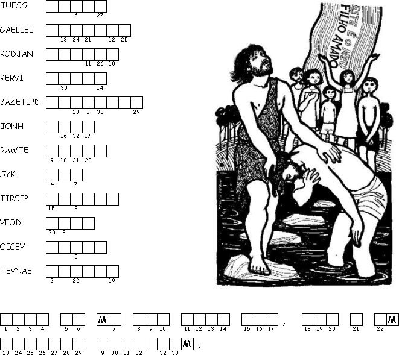
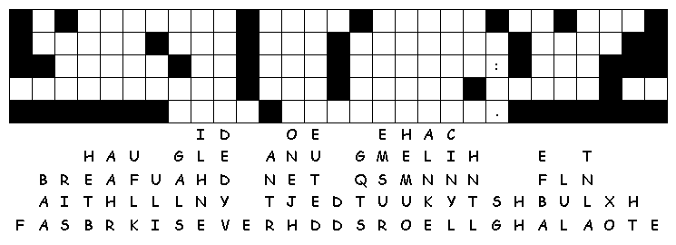

This Week: Isaiah 42:1-9; Psalm 29; Acts 10:34-43; Matthew 3:13-17
Elementary School Pew-work
Unscramble the bolded words:
Jesus left Geelila _____________ and went to the rdoanJ _____________ River to be baptized by honJ _____________. But John kept objecting and said, "I ought to be baptized by you. Why have you come to me?" uJsse _____________a nswered, "For now this is how it should be, because we must do all that odG _____________ wants us to do." Then John agreed. So Jesus was edpbatiz _____________. And as soon as he came out of the water, the sky opened, and he saw the itSpri_____________ of God coming down on him like a oevd_____________. Then a voice from eavehn_____________ said, "This is my own dear Son, and I am pleased with him."

Next week: Isaiah 49:1-7, Psalm 40:1-11, 1 Corinthians 1:1-9, John 1:29-42
This Week: Isaiah 42:1-9; Psalm 29; Acts 10:34-43; Matthew 3:13-17
Middle-School Pew-work
1Behold this is my servant upon whom I lean, my elect in who my soul is pacified: I have given my spirit upon him, that he may show forth judgement among the gentiles. 2He shall not be an outcryer, nor lift up his voice, His voice shall not be heard in the streets. 3And a bruised reed shall he not break and the smoking flax shall he not quench: but faithfully and truly shall he give judgement. 4He shall not be pensive nor careful, that |
he may restore righteousness unto the earth: and the Gentiles also shall look for his laws. 5For thus saith God the LORD unto him, even he that made the heavens, and spread them abroad, and set forth the earth with her increase: which giveth breath unto the people that is in it, and spiritto them that dwell therein) 6I the LORD have called ye in righteousness, and led thee by the hand Therefore will I also defend the, and give thee for a covenant of the people, and to |
be the light of the Gentiles. 7That thou mayest open the eyes of the blind, let out the prisoners from their bonds, and them that sit in darkness, out of the dungeon house. 8Even I am the LORD, and this is my name: and my glory will I bive to none other, neither mine honour to graven images.: 9Behold old things are come to pass, and new things do I declare, and or ever they come I tell you of them. |
What do you think are the pros and cons of the following different baptismal forms:
Immersion
________________________________________________________________________
_________________________________________________________________________________
_________________________________________________________________________________
________________________________________________________________________________
Effusion:
________________________________________________________________________
________________________________________________________________________________
_________________________________________________________________________________
________________________________________________________________________________
Sprinkling:
_______________________________________________________________________
________________________________________________________________________________
_________________________________________________________________________________
________________________________________________________________________________

Next week: Isaiah 49:1-7, Psalm 40:1-11, 1 Corinthians 1:1-9, John 1:29-42